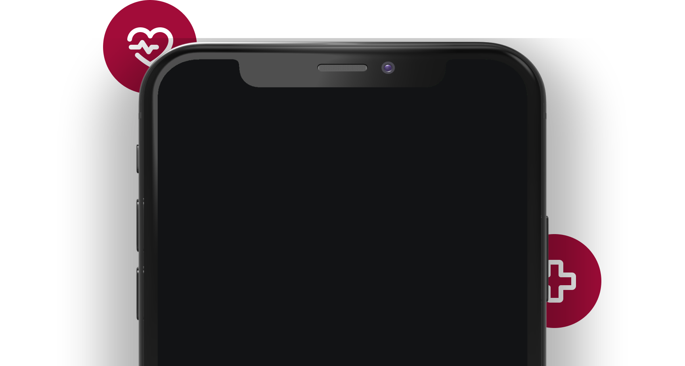

HEALTH
HEALTH
Effect of Medical technology
Scroll Ahead
Scroll Ahead
With the advancement of technology, the health sector has been revolutionized. It has allowed professionals to find new solutions to health problems and to save a lot of lives. But there are some problems that come up with this rapid technical implementations as well.


It's not all good health and happy life, there is a dark side to everything...

The increasing reliance on technology in healthcare has led to a dependence on technology that can sometimes hinder healthcare providers from delivering care. For example, if technology systems go down or malfunction, healthcare providers may be unable to access critical patient information or complete necessary tasks.

The use of electronic health records and other digital tools has raised concerns about privacy and security risks. Healthcare providers must implement strong security protocols to protect patient data from cyberattacks and data breaches.

The increasing use of technology in healthcare has led to job displacement, particularly in areas such as medical transcription and radiology. This has led to concerns about job security for healthcare workers.